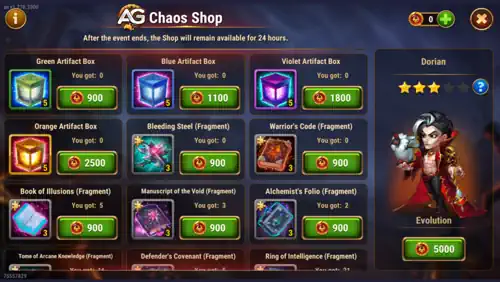

Dorian's Way of Chaos shop is one of the best moments for beginners to build him correctly. The right shopping plan is simple: secure the progression that is hard to replace later and avoid wasting coins on items you can farm with normal energy.
You can earn Chaos Coins by fighting in Hero Brawls and by completing Way of Chaos event missions. Those coins should be spent with discipline, because this shop can accelerate your account a lot if you focus on Dorian's soul stones first and artifacts right after.

If you are an early or mid-game player, your first goal should be getting Dorian to at least four stars during the event. That is the most practical milestone because it unlocks relic usage later and gives you a strong foundation without forcing you to overspend event coins forever.
After that, shift your coins into the progression that is hardest to replace outside the event, especially artifacts. Equipment looks tempting, but it is still the weakest long-term purchase for most accounts.
Even though Dorian soul stones can also be bought with gold in the in-game shop, that is still difficult for beginners. Advanced players usually do not struggle with gold anymore, but new accounts need huge amounts of gold for almost everything.
If gold is one of your main problems, read my Dungeon Guide for Infinite Gold. That guide is a better solution than trying to solve your gold shortage by spending event coins poorly.
Once Dorian reaches four stars, you can slow down on soul stones and finish the remaining evolution later with the Evolution Booster. That lets you preserve more event currency for artifacts, which are much harder to get in the endgame.
Dorian remains one of the best beginner supports because his biggest value is strategic, not stat-based. His vampirism aura keeps helping nearby allies even after Dorian dies, which means he can create impact without needing to be one of the strongest heroes on your account.
That is why rushing beyond four stars is not always necessary during the event. Stars help, but early on they mainly add base stats. Glyphs, relics, and artifacts usually create a bigger gameplay difference than forcing extra stars immediately.
After your four-star target, the next best buy is Dorian's weapon artifact. With his rework, that artifact became even more valuable because it adds a stronger teamwide defensive layer while Dorian keeps bringing his core vampirism utility.
After the weapon, focus on Dorian's book and ring artifacts. This event is one of the best times to strengthen those pieces because artifact progression is slow and expensive in the long run.
If you are a beginner, avoid spending Chaos Coins on equipment unless there is a true emergency. Equipment is much easier to farm with campaign energy, and using energy is better for your account in every direction.
So even if gear looks attractive in the shop, it is usually better to keep your event coins for Dorian progression that normal daily play does not replace easily.
Remember that unlocking relic progression has two different requirements. You gain access to the Relics screen early in the game at team level 15, but that does not mean Dorian can use relics immediately.
To actually use Dorian's relic, he must reach level 50 and have at least four evolution stars. That is another reason why aiming for four stars during the event is such a practical target for beginners.
The best Way of Chaos shopping plan for most players is straightforward: get Dorian to four stars first, then move into his weapon artifact, and then his other artifacts. That order gives beginners real progress now and better long-term value later.
Dorian is excellent because he does not need extreme investment to return value. Use the event to secure the pieces that are hardest to replace, and let energy farming handle equipment instead of wasting your best coins on short-term fixes.
If you want to compare builds or share the guide with friends, here are the Dorian character guides in other languages:
Did you like our Dorian Way of Chaos Shop Guide? If you think another shop priority is better for your account, share your opinion in the comment section on Alexandre Games. Questions, suggestions, and feedback are always welcome.
Click the button below to get started: